1 · Identity
| case | case_AM_five_page_straddling_insert | kind | real |
|---|---|---|---|
| input folder | C:\Users\yoav\devel\applitools\bin\tests\images\PDFs\real\edited\case_AM_five_page_straddling_insert | ||
| output folder | C:\Users\yoav\testres\pdf\e2e_261006\case_AM_five_page_straddling_insert_20261006-135401-a8621f | ||
| source | v1.pdf | ||
| render DPI | 96.0 | units | px |
| baseline (v1) | 816×1056 px, axTree=True | checkpoint (v2) | 816×1056 px, axTree=True |
| pipeline commit | ec8da6889 | ||
2 · Ground truth
| type | granularity | v1 page | description | expected region |
|---|---|---|---|---|
| insert | paragraph | 2 | Inserted one paragraph after the register paragraph, the last on page 2, so that its head renders at the bottom of v2 page 2 and its tail opens v2 page 3. The only edit. | page 2, bottom, and page 3, top -- one inserted paragraph split by the page boundary; everything below it on pages 3-5 shifts down, page 1 is untouched |
provenance.md
Provenance — case_AM_five_page_straddling_insert
Real-PDF labelled pair (Story 1.13). v2.pdf was produced by an external
editor and is frozen; this harness applies no edits of its own.
Pair
- v1 (baseline):
v1.pdf - v2 (checkpoint):
v2.pdf - Alignment + edits GT source: case_AM_five_page_straddling_insert.json
v2 authoring — TODO (author fills)
- Editor / tool + version: _TODO (e.g. Acrobat Pro 2024.x / pikepdf 9.x / Word re-export)_
- v1 source distribution / origin: _TODO_
Producers (harness-stamped)
- AXTree extractor:
@applitools/ax-tree@1.6.4viaextract-axtree/extract.mjs(toJSON verbatim, Variant A camelCase) - Rasterizer:
pypdfium2==(see requirements.txt)viarasterize.pyat 96 DPI
Determinism (NFR5)
Both producers are deterministic on frozen PDFs. The only non-determinism is
inside the external @applitools/ax-tree extractor (out of our control); the
harness itself adds no timestamps/RNG.
3 · Algorithm
| matcher | Strict |
|---|---|
| dynamic | Dynamic mode: ON |
| overflow settings | vTol=2 · hTol=2 · maxVSearch=200 · minNbrText=3 · aggregateRawDiffs=True |
4 · Page alignment
5 v1 pages · 5 v2 pages · 5 matched pairs · inserted (v2-only): [] · deleted (v1-only): []
| pair | pages | disposition | classified diffs |
|---|---|---|---|
| 0 | v1 p0 ↔ v2 p0 | identical | 0 |
| 1 | v1 p1 ↔ v2 p1 | modified | 7 |
| 2 | v1 p2 ↔ v2 p2 | modified | 66 |
| 3 | v1 p3 ↔ v2 p3 | modified | 61 |
| 4 | v1 p4 ↔ v2 p4 | modified | 32 |
alignment summary
case: case_AM_five_page_straddling_insert v1 pages: 5 v2 pages: 5 matched pairs: 5 v1-only (deleted): [] v2-only (inserted): [] total classified page diffs (over matched pairs): 166 alerting (real diff): 8 [Changed/Inserted/Deleted/Modified — IsAlerting()] dynamic content: 0 [reported, never alerts] document furniture: 0 [reported, never alerts] content shift (overflow): 11 [crossed a page boundary; user confirms] displacement (filtered): 147 [same-page move; not surfaced] dynamic: ON (--no-dynamic to disable) pair v1#0 <-> v2#0: MATCH (no diffs) -> result.json + overflow-trace.json pair v1#1 <-> v2#1: 317 raw -> 7 aggregated -> 7 classified (pair-01-v1p1-v2p1/: matcher/ raw, overflow/ classified+aggregation) pair v1#2 <-> v2#2: 2554 raw -> 62 aggregated -> 66 classified (pair-02-v1p2-v2p2/: matcher/ raw, overflow/ classified+aggregation) pair v1#3 <-> v2#3: 287 raw -> 60 aggregated -> 61 classified (pair-03-v1p3-v2p3/: matcher/ raw, overflow/ classified+aggregation) pair v1#4 <-> v2#4: 842 raw -> 30 aggregated -> 32 classified (pair-04-v1p4-v2p4/: matcher/ raw, overflow/ classified+aggregation)
timeline
- MATCH v1#0 <-> v2#0 (identical)
- MODIFIED v1#1 <-> v2#1 (modified)
- MODIFIED v1#2 <-> v2#2 (modified)
- MODIFIED v1#3 <-> v2#3 (modified)
- MODIFIED v1#4 <-> v2#4 (modified)
Page cells show the overlay visualization (diff/displacement annotations) where available; raw renders otherwise.
overlay legend


5 · Result summary
Emitted records aggregated across 5 pair(s). Pruned records excluded (see Diagnostics).
by DiffCause
by frame
by mechanism
6 · Per-pair detail
Pair 0 v1 p0 ↔ v2 p0 no diffs
0 emitted · 0 pruned · raw=0 · aggregated=0
Verified against the returned PageMatchResult: 0 returned PageDiffs, 0 table rows marked V.
Verification passed: every returned PageDiff is in the table and every non-returned row is pruned.
no records
Pair 1 v1 p1 ↔ v2 p1 Modified 7
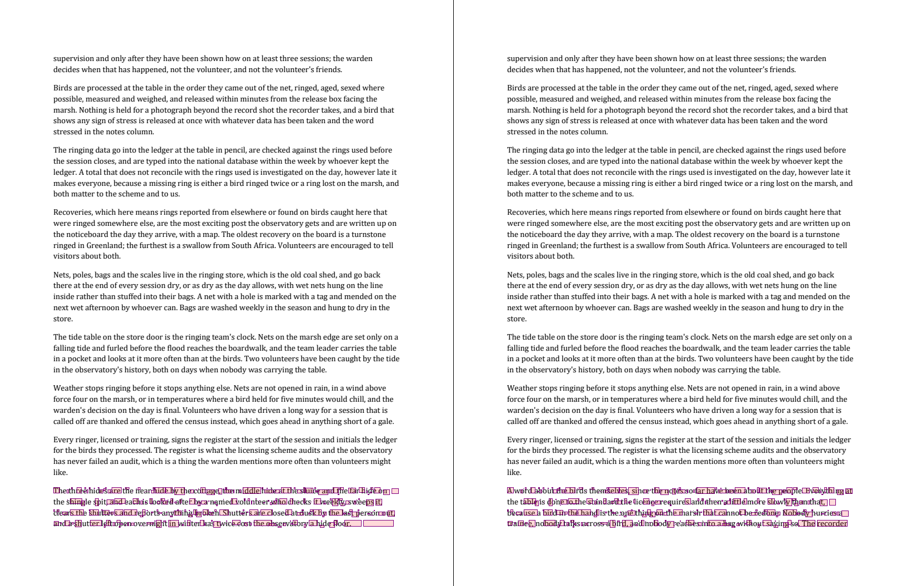
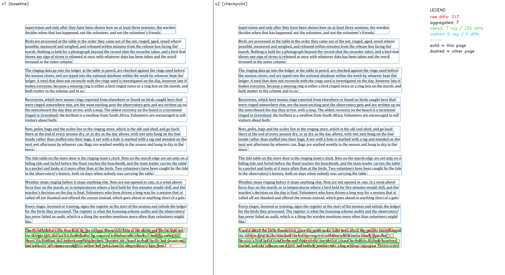
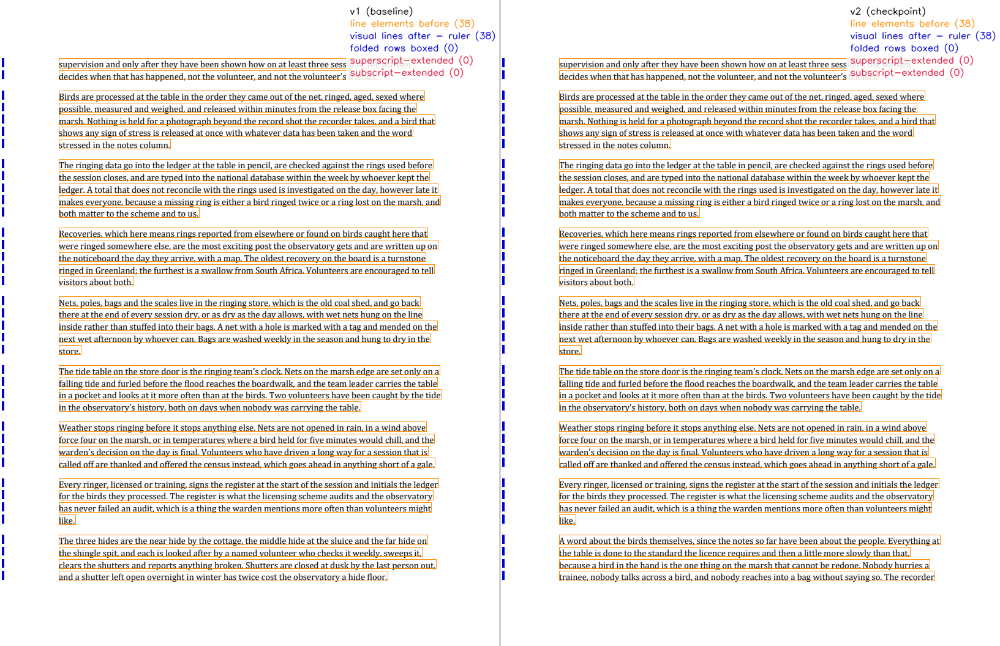
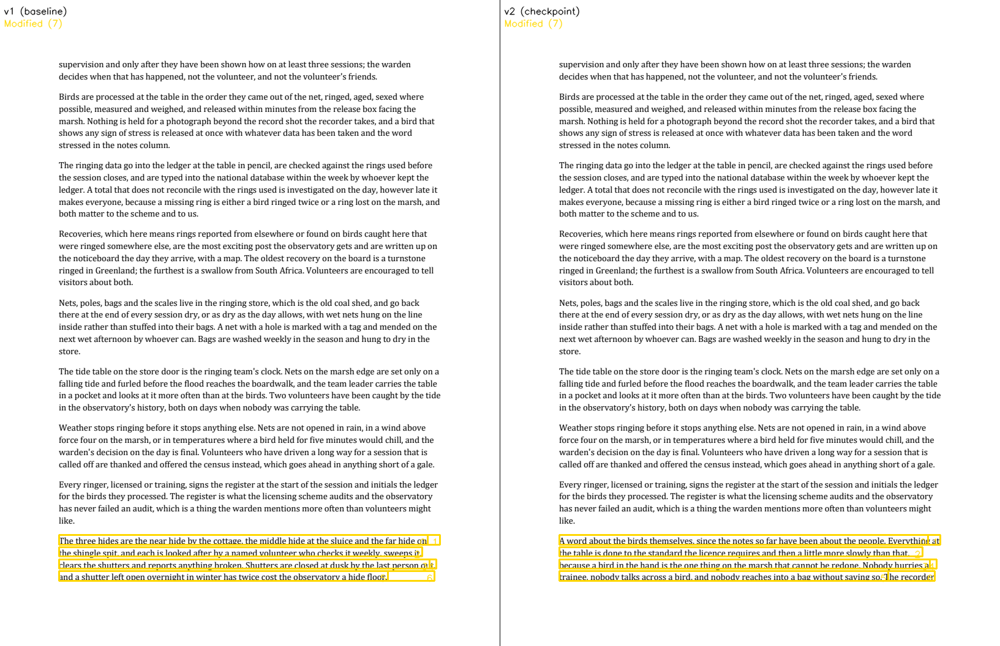
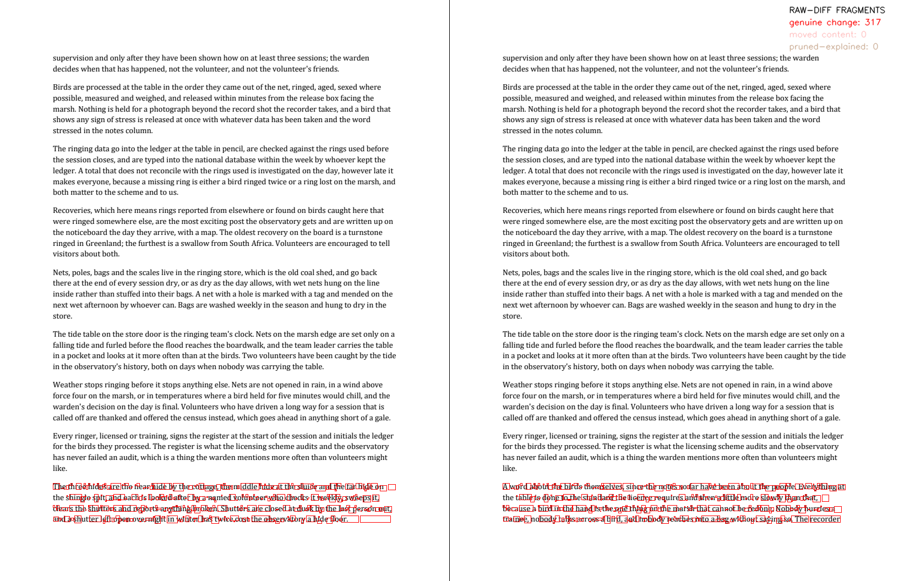
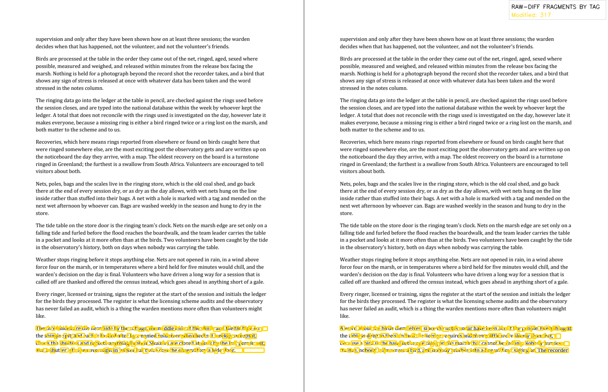
fragment-tags.png verified against fragments.json (317 fragments; border colour checked on 152 fragment-sides (482 not checkable: overlapped by other borders))
7 emitted · 0 pruned · raw=317 · aggregated=7
Verified against the returned PageMatchResult: 7 returned PageDiffs, 7 table rows marked V.
Verification passed: every returned PageDiff is in the table and every non-returned row is pruned.
| ret | id | parent | block | tag | mechanism | frame | baseline rect (v1) | checkpoint rect (v2) | approved off | pruned |
|---|---|---|---|---|---|---|---|---|---|---|
| V | 324 | 317 | 0 | Modified | None | both | 96,874 602×16 | 96,874 602×16 | — | no |
| V | 325 | 318 | 1 | Modified | None | both | 96,874 622×16 | 96,874 622×16 | — | no |
| V | 326 | 319 | 2 | Modified | None | both | 96,894 593×15 | 96,894 593×15 | — | no |
| V | 327 | 320 | 3 | Modified | None | both | 96,914 605×15 | 96,914 605×15 | — | no |
| V | 328 | 321 | 4 | Modified | None | both | 96,914 616×15 | 96,914 616×15 | — | no |
| V | 329 | 322 | 5 | Modified | None | both | 96,933 537×16 | 96,933 537×16 | — | no |
| V | 330 | 323 | 6 | Modified | None | both | 96,933 613×16 | 96,933 613×16 | — | no |
Pair 2 v1 p2 ↔ v2 p2 DisplacedDown 62Inserted 1OverflowFromPrev 1OverflowToNext 2
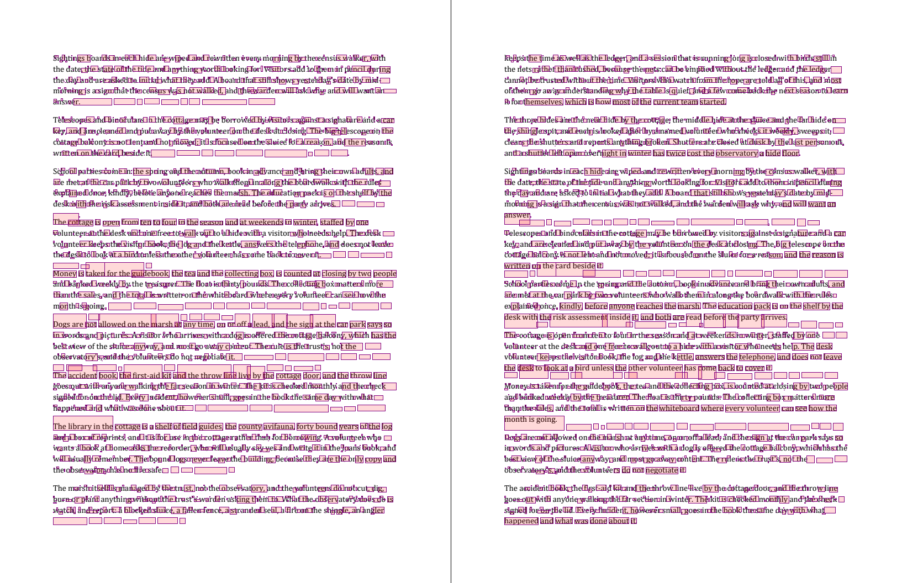
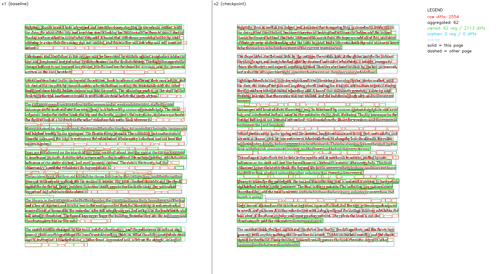
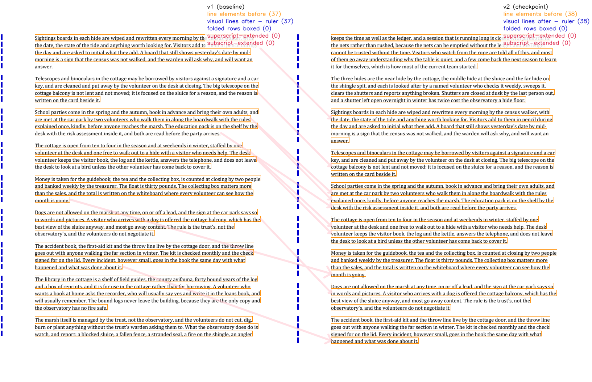
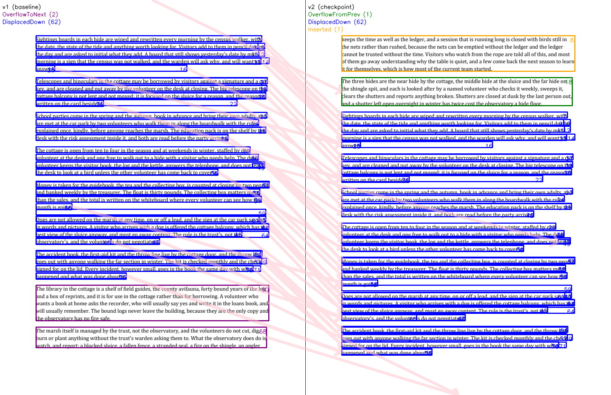
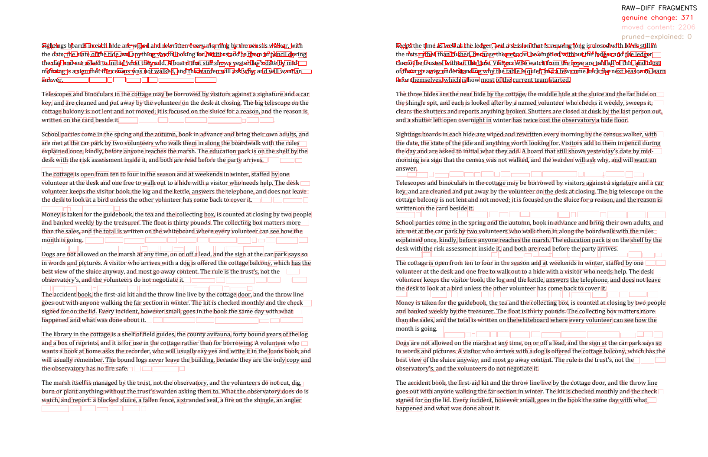
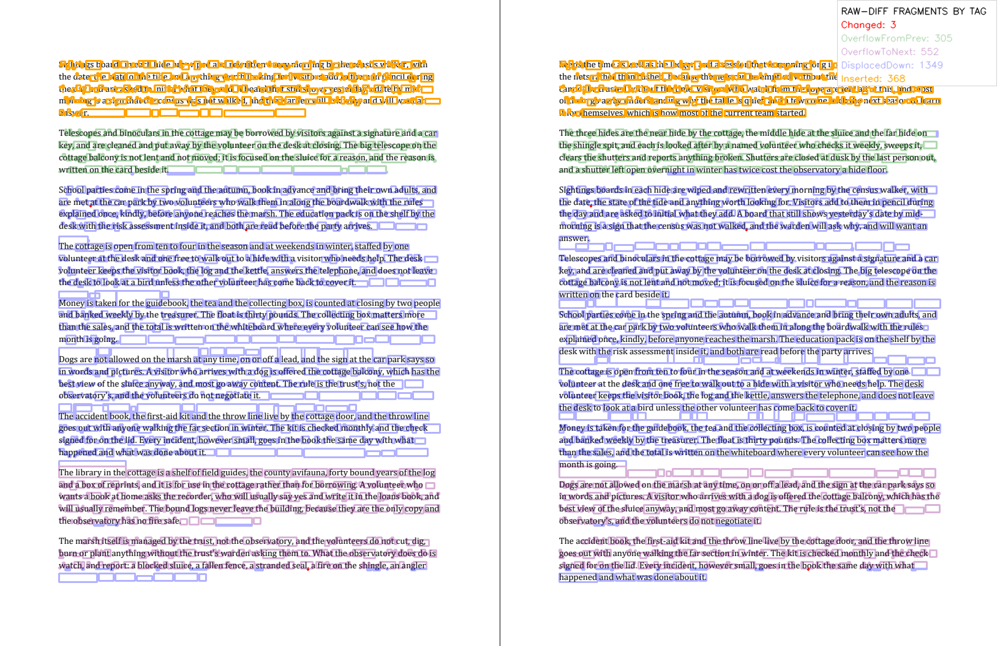
fragment-tags.png verified against fragments.json (2577 fragments; border colour checked on 1261 fragment-sides (3893 not checkable: overlapped by other borders); 45 fragment-sides are hidden under the legend panel)
66 emitted · 0 pruned · raw=2554 · aggregated=62
Verified against the returned PageMatchResult: 66 returned PageDiffs, 66 table rows marked V.
Verification passed: every returned PageDiff is in the table and every non-returned row is pruned.
| ret | id | parent | block | tag | mechanism | frame | baseline rect (v1) | checkpoint rect (v2) | approved off | pruned |
|---|---|---|---|---|---|---|---|---|---|---|
| V | 2616 | 2554 | 7 | DisplacedDown | M1Line | baseline | 96,95 603×16 | 96,299 603×16 | (0, 204) | no |
| V | 2617 | 2554 | 8 | Inserted | None | checkpoint | — | 96,95 623×95 | — | no |
| V | 2618 | 2555 | 9 | DisplacedDown | M1Line | baseline | 96,115 593×15 | 96,319 593×15 | (0, 204) | no |
| V | 2619 | 2556 | 10 | DisplacedDown | M1Line | baseline | 96,115 611×15 | 96,319 611×15 | (0, 204) | no |
| V | 2620 | 2557 | 11 | DisplacedDown | M1Block | baseline | 96,134 595×16 | 96,337 595×16 | (0, 203) | no |
| V | 2621 | 2558 | 12 | DisplacedDown | M1Block | baseline | 96,134 611×16 | 96,337 611×16 | (0, 203) | no |
| V | 2622 | 2559 | 13 | DisplacedDown | M1Line | baseline | 96,154 601×16 | 96,358 601×16 | (0, 204) | no |
| V | 2623 | 2560 | 14 | DisplacedDown | M1Line | baseline | 96,154 623×16 | 96,358 623×16 | (0, 204) | no |
| V | 2624 | 2561 | 15 | DisplacedDown | M1Line | baseline | 96,174 50×16 | 96,378 50×16 | (0, 204) | no |
| V | 2625 | 2562 | 16 | DisplacedDown | M1Line | baseline | 96,174 403×16 | 96,378 403×16 | (0, 204) | no |
| V | 2626 | 2563 | 17 | DisplacedDown | M1Line | baseline | 96,207 618×16 | 96,411 618×16 | (0, 204) | no |
| V | 2627 | 2563 | 18 | OverflowFromPrev | Band | checkpoint | — | 96,207 616×75 | — | no |
| V | 2628 | 2564 | 19 | DisplacedDown | M1Line | baseline | 96,227 617×16 | 96,431 617×16 | (0, 204) | no |
| V | 2629 | 2565 | 20 | DisplacedDown | M1Block | baseline | 96,247 614×15 | 96,450 614×15 | (0, 203) | no |
| V | 2630 | 2566 | 21 | DisplacedDown | M1Block | baseline | 96,266 180×16 | 96,469 180×16 | (0, 203) | no |
| V | 2631 | 2567 | 22 | DisplacedDown | M1Block | baseline | 96,266 537×16 | 96,469 537×16 | (0, 203) | no |
| V | 2632 | 2568 | 23 | DisplacedDown | M1Block | baseline | 96,300 617×15 | 96,503 617×15 | (0, 203) | no |
| V | 2633 | 2569 | 24 | DisplacedDown | M1Block | baseline | 96,319 595×16 | 96,522 595×16 | (0, 203) | no |
| V | 2634 | 2570 | 25 | DisplacedDown | M1Line | baseline | 96,339 614×16 | 96,543 614×16 | (0, 204) | no |
| V | 2635 | 2571 | 26 | DisplacedDown | M1Line | baseline | 96,359 513×16 | 96,563 513×16 | (0, 204) | no |
| V | 2636 | 2572 | 27 | DisplacedDown | M1Line | baseline | 96,155 601×16 | 96,359 601×16 | (0, 204) | no |
| V | 2637 | 2573 | 28 | DisplacedDown | M1Line | baseline | 96,175 50×15 | 96,379 50×15 | (0, 204) | no |
| V | 2638 | 2574 | 29 | DisplacedDown | M1Line | baseline | 96,392 572×16 | 96,596 572×16 | (0, 204) | no |
| V | 2639 | 2575 | 30 | DisplacedDown | M1Line | baseline | 96,412 594×15 | 96,616 594×15 | (0, 204) | no |
| V | 2640 | 2576 | 31 | DisplacedDown | M1Line | baseline | 96,208 618×15 | 96,412 618×15 | (0, 204) | no |
| V | 2641 | 2577 | 32 | DisplacedDown | M1Block | baseline | 96,432 611×15 | 96,635 611×15 | (0, 203) | no |
| V | 2642 | 2578 | 33 | DisplacedDown | M1Line | baseline | 96,228 617×15 | 96,432 617×15 | (0, 204) | no |
| V | 2643 | 2579 | 34 | DisplacedDown | M1Line | baseline | 96,451 486×16 | 96,655 486×16 | (0, 204) | no |
| V | 2644 | 2580 | 35 | DisplacedDown | M1Block | baseline | 96,248 614×16 | 96,451 614×16 | (0, 203) | no |
| V | 2645 | 2581 | 36 | DisplacedDown | M1Block | baseline | 96,268 180×16 | 96,471 180×16 | (0, 203) | no |
| V | 2646 | 2582 | 37 | DisplacedDown | M1Block | baseline | 96,484 623×16 | 96,687 623×16 | (0, 203) | no |
| V | 2647 | 2583 | 38 | DisplacedDown | M1Block | baseline | 96,504 598×16 | 96,708 598×16 | (0, 204) | no |
| V | 2648 | 2584 | 39 | DisplacedDown | M1Block | baseline | 96,524 602×16 | 96,728 602×16 | (0, 204) | no |
| V | 2649 | 2585 | 40 | DisplacedDown | M1Block | baseline | 96,544 96×15 | 96,748 96×15 | (0, 204) | no |
| V | 2650 | 2586 | 41 | DisplacedDown | M1Block | baseline | 96,340 614×15 | 96,544 614×15 | (0, 204) | no |
| V | 2651 | 2587 | 42 | DisplacedDown | M1Block | baseline | 96,360 513×15 | 96,564 513×15 | (0, 204) | no |
| V | 2652 | 2588 | 43 | DisplacedDown | M1Block | baseline | 96,577 614×16 | 96,781 614×16 | (0, 204) | no |
| V | 2653 | 2589 | 44 | DisplacedDown | M1Block | baseline | 96,597 622×15 | 96,800 622×15 | (0, 203) | no |
| V | 2654 | 2590 | 45 | DisplacedDown | M1Block | baseline | 96,616 550×16 | 96,819 550×16 | (0, 203) | no |
| V | 2655 | 2591 | 46 | DisplacedDown | M1Line | baseline | 96,412 594×16 | 96,616 594×16 | (0, 204) | no |
| V | 2656 | 2592 | 47 | DisplacedDown | M1Line | baseline | 96,636 330×16 | 96,840 330×16 | (0, 204) | no |
| V | 2657 | 2593 | 48 | DisplacedDown | M1Block | baseline | 96,433 611×16 | 96,636 611×16 | (0, 203) | no |
| V | 2658 | 2594 | 49 | DisplacedDown | M1Block | baseline | 674,437 33×12 | 674,640 33×12 | (0, 203) | no |
| V | 2659 | 2595 | 50 | DisplacedDown | M1Line | baseline | 96,452 486×16 | 96,656 486×16 | (0, 204) | no |
| V | 2660 | 2596 | 51 | DisplacedDown | M1Block | baseline | 96,669 604×16 | 96,872 604×16 | (0, 203) | no |
| V | 2661 | 2597 | 52 | DisplacedDown | M1Line | baseline | 96,689 603×16 | 96,893 603×16 | (0, 204) | no |
| V | 2662 | 2598 | 53 | DisplacedDown | M1Block | baseline | 96,486 623×16 | 96,689 623×16 | (0, 203) | no |
| V | 2663 | 2599 | 54 | DisplacedDown | M1Line | baseline | 96,709 580×16 | 96,913 580×16 | (0, 204) | no |
| V | 2664 | 2600 | 55 | DisplacedDown | M1Line | baseline | 96,505 598×16 | 96,709 598×16 | (0, 204) | no |
| V | 2665 | 2601 | 56 | DisplacedDown | M1Block | baseline | 96,729 241×15 | 96,932 241×15 | (0, 203) | no |
| V | 2666 | 2602 | 57 | DisplacedDown | M1Line | baseline | 96,525 602×15 | 96,729 602×15 | (0, 204) | no |
| V | 2667 | 2603 | 58 | DisplacedDown | M1Line | baseline | 96,544 96×16 | 96,748 96×16 | (0, 204) | no |
| V | 2668 | 2604 | 59 | DisplacedDown | M1Block | baseline | 96,559 614×15 | 96,762 614×15 | (0, 203) | no |
| V | 2669 | 2603 | 60 | OverflowToNext | Band | baseline | 96,762 622×95 | — | — | no |
| V | 2670 | 2605 | 61 | DisplacedDown | M1Line | baseline | 96,578 596×15 | 96,782 596×15 | (0, 204) | no |
| V | 2671 | 2606 | 62 | DisplacedDown | M1Line | baseline | 96,578 614×15 | 96,782 614×15 | (0, 204) | no |
| V | 2672 | 2607 | 63 | DisplacedDown | M1Block | baseline | 96,598 622×16 | 96,801 622×16 | (0, 203) | no |
| V | 2673 | 2608 | 64 | DisplacedDown | M1Block | baseline | 96,618 622×16 | 96,821 622×16 | (0, 203) | no |
| V | 2674 | 2609 | 65 | DisplacedDown | M1Line | baseline | 96,637 200×16 | 96,841 200×16 | (0, 204) | no |
| V | 2675 | 2610 | 66 | DisplacedDown | M1Line | baseline | 96,637 330×16 | 96,841 330×16 | (0, 204) | no |
| V | 2676 | 2611 | 67 | DisplacedDown | M1Block | baseline | 96,671 600×16 | 96,874 600×16 | (0, 203) | no |
| V | 2677 | 2611 | 68 | OverflowToNext | Band | baseline | 96,874 616×55 | — | — | no |
| V | 2678 | 2612 | 69 | DisplacedDown | M1Line | baseline | 96,690 616×15 | 96,894 616×15 | (0, 204) | no |
| V | 2679 | 2613 | 70 | DisplacedDown | M1Line | baseline | 96,710 580×15 | 96,914 580×15 | (0, 204) | no |
| V | 2680 | 2614 | 71 | DisplacedDown | M1Line | baseline | 96,710 600×15 | 96,914 600×15 | (0, 204) | no |
| V | 2681 | 2615 | 72 | DisplacedDown | M1Block | baseline | 96,730 241×16 | 96,933 241×16 | (0, 203) | no |
Pair 3 v1 p3 ↔ v2 p3 DisplacedDown 55OverflowFromPrev 4OverflowToNext 2
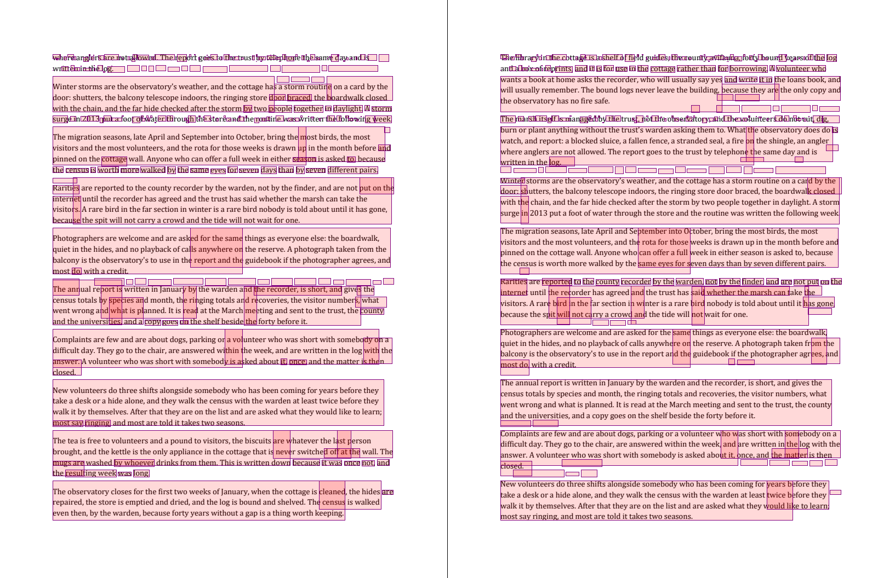
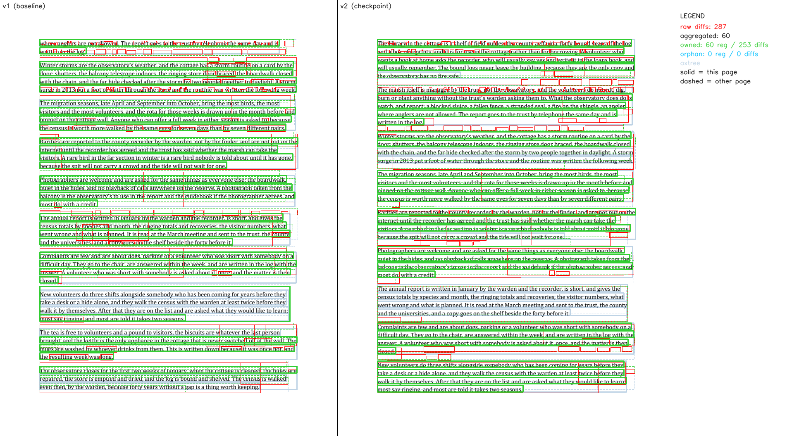
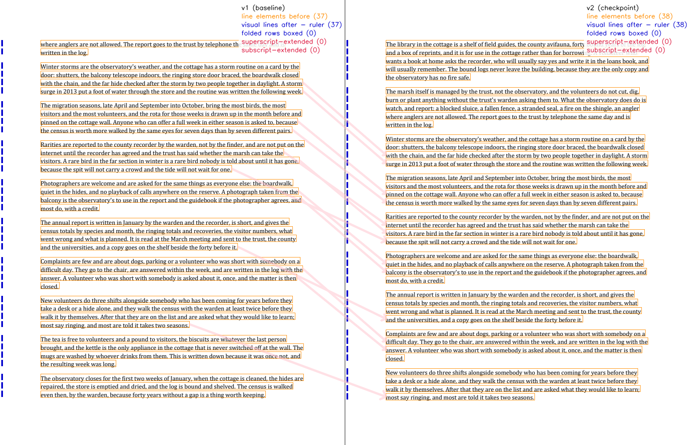
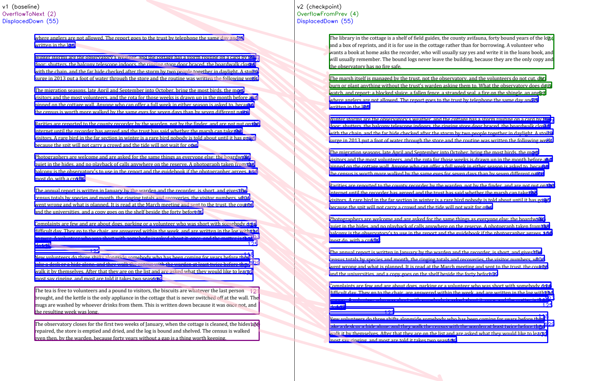
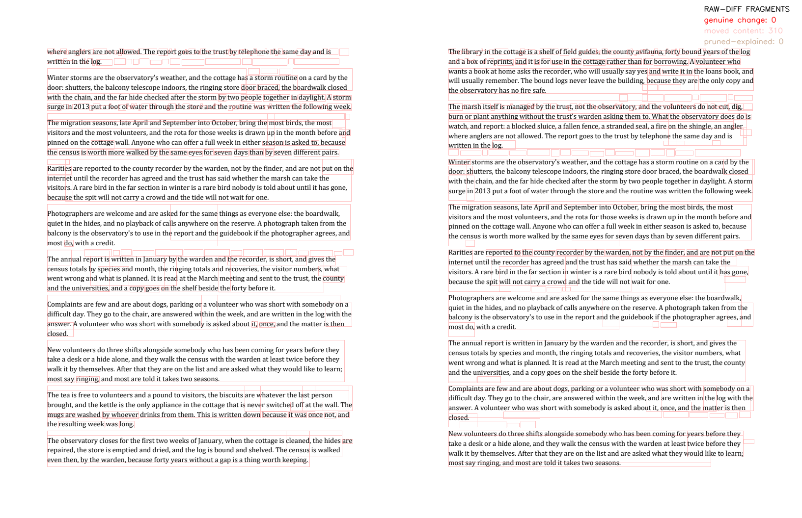
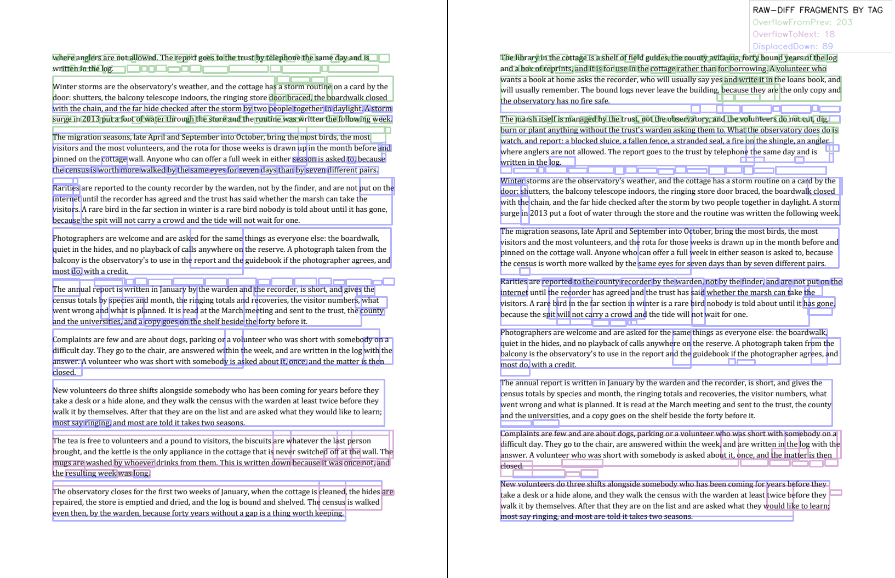
fragment-tags.png verified against fragments.json (310 fragments; border colour checked on 284 fragment-sides (336 not checkable: overlapped by other borders))
61 emitted · 5 pruned · raw=287 · aggregated=60
Verified against the returned PageMatchResult: 61 returned PageDiffs, 61 table rows marked V.
Verification passed: every returned PageDiff is in the table and every non-returned row is pruned.
| ret | id | parent | block | tag | mechanism | frame | baseline rect (v1) | checkpoint rect (v2) | approved off | pruned |
|---|---|---|---|---|---|---|---|---|---|---|
| V | 347 | 287 | 73 | DisplacedDown | M1Block | baseline | 96,95 579×16 | 96,266 579×16 | (0, 171) | no |
| V | 348 | 287 | 74 | OverflowFromPrev | Band | checkpoint | — | 96,95 622×95 | — | no |
| V | 349 | 289 | 75 | DisplacedDown | M1Block | baseline | 96,115 112×15 | 96,285 112×15 | (0, 170) | no |
| V | 350 | 292 | 76 | DisplacedDown | M1Block | baseline | 96,148 613×16 | 96,319 613×16 | (0, 171) | no |
| V | 351 | 293 | 77 | DisplacedDown | M1Block | baseline | 96,154 622×16 | 96,325 622×16 | (0, 171) | no |
| V | 352 | 294 | 78 | DisplacedDown | M1Block | baseline | 96,168 612×15 | 96,338 612×15 | (0, 170) | no |
| V | 353 | 295 | 79 | DisplacedDown | M1Block | baseline | 96,187 620×16 | 96,357 620×16 | (0, 170) | no |
| V | 354 | 296 | 80 | OverflowFromPrev | None | checkpoint | — | 96,207 600×16 | — | no |
| V | 355 | 296 | 81 | DisplacedDown | M1Block | baseline | 96,207 620×16 | 96,378 620×16 | (0, 171) | no |
| V | 356 | 297 | 82 | OverflowFromPrev | None | checkpoint | — | 96,227 616×16 | — | no |
| V | 357 | 298 | 83 | OverflowFromPrev | None | checkpoint | — | 96,247 600×15 | — | no |
| V | 358 | 299 | 84 | DisplacedDown | M1Line | baseline | 96,260 618×16 | 96,431 618×16 | (0, 171) | no |
| V | 359 | 300 | 85 | DisplacedDown | M1Line | baseline | 96,95 579×16 | 96,266 579×16 | (0, 171) | no |
| V | 360 | 301 | 86 | DisplacedDown | M1Block | baseline | 96,280 608×15 | 96,450 608×15 | (0, 170) | no |
| V | 361 | 302 | 87 | DisplacedDown | M1Block | baseline | 96,116 112×16 | 96,286 112×16 | (0, 170) | no |
| V | 362 | 303 | 88 | DisplacedDown | M1Block | baseline | 96,300 595×15 | 96,470 595×15 | (0, 170) | no |
| V | 363 | 304 | 89 | DisplacedDown | M1Block | baseline | 96,148 613×16 | 96,319 613×16 | (0, 171) | no |
| V | 364 | 305 | 90 | DisplacedDown | M1Block | baseline | 96,333 624×15 | 96,503 624×15 | (0, 170) | no |
| V | 365 | 306 | 91 | DisplacedDown | M1Block | baseline | 96,169 612×16 | 96,339 612×16 | (0, 170) | no |
| V | 366 | 307 | 92 | DisplacedDown | M1Block | baseline | 96,352 575×16 | 96,522 575×16 | (0, 170) | no |
| V | 367 | 308 | 93 | DisplacedDown | M1Block | baseline | 96,372 612×16 | 96,543 612×16 | (0, 171) | no |
| V | 368 | 309 | 94 | DisplacedDown | M1Block | baseline | 96,392 452×16 | 96,563 452×16 | (0, 171) | no |
| V | 369 | 310 | 95 | DisplacedDown | M1Line | baseline | 96,241 580×15 | 96,412 580×15 | (0, 171) | no |
| V | 370 | 311 | 96 | DisplacedDown | M1Line | baseline | 96,425 597×16 | 96,596 597×16 | (0, 171) | no |
| V | 371 | 312 | 97 | DisplacedDown | M1Line | baseline | 96,261 618×15 | 96,432 618×15 | (0, 171) | no |
| V | 372 | 313 | 98 | DisplacedDown | M1Line | baseline | 96,445 610×16 | 96,616 610×16 | (0, 171) | no |
| V | 373 | 314 | 99 | DisplacedDown | M1Block | baseline | 96,281 608×16 | 96,451 608×16 | (0, 170) | no |
| V | 374 | 315 | 100 | DisplacedDown | M1Block | baseline | 96,465 617×15 | 96,635 617×15 | (0, 170) | no |
| V | 375 | 316 | 101 | DisplacedDown | M1Block | baseline | 96,301 595×16 | 96,471 595×16 | (0, 170) | no |
| V | 376 | 317 | 102 | DisplacedDown | M1Block | baseline | 96,484 139×16 | 96,654 139×16 | (0, 170) | no |
| V | 377 | 318 | 103 | DisplacedDown | M1Block | baseline | 96,334 624×16 | 96,504 624×16 | (0, 170) | no |
| V | 378 | 319 | 104 | DisplacedDown | M1Block | baseline | 96,517 588×16 | 96,687 588×16 | (0, 170) | no |
| V | 379 | 320 | 105 | DisplacedDown | M1Block | baseline | 96,354 575×16 | 96,524 575×16 | (0, 170) | no |
| V | 380 | 321 | 106 | DisplacedDown | M1Block | baseline | 96,537 596×16 | 96,707 596×16 | (0, 170) | no |
| V | 381 | 322 | 107 | DisplacedDown | M1Block | baseline | 96,373 612×15 | 96,544 612×15 | (0, 171) | no |
| V | 382 | 323 | 108 | DisplacedDown | M1Block | baseline | 96,557 605×16 | 96,728 605×16 | (0, 171) | no |
| V | 383 | 324 | 109 | DisplacedDown | M1Block | baseline | 96,577 466×16 | 96,748 466×16 | (0, 171) | no |
| V | 384 | 325 | 110 | DisplacedDown | M1Line | baseline | 96,426 597×15 | 96,597 597×15 | (0, 171) | no |
| V | 385 | 326 | 111 | DisplacedDown | M1Line | baseline | 96,610 614×16 | 96,781 614×16 | (0, 171) | no |
| V | 386 | 327 | 112 | DisplacedDown | M1Line | baseline | 96,445 610×16 | 96,616 610×16 | (0, 171) | no |
| V | 387 | 328 | 113 | DisplacedDown | M1Block | baseline | 96,630 620×15 | 96,800 620×15 | (0, 170) | no |
| V | 388 | 329 | 114 | DisplacedDown | M1Block | baseline | 96,466 617×16 | 96,636 617×16 | (0, 170) | no |
| V | 389 | 330 | 115 | DisplacedDown | M1Block | baseline | 96,650 606×15 | 96,820 606×15 | (0, 170) | no |
| V | 390 | 331 | 116 | DisplacedDown | M1Block | baseline | 96,486 139×16 | 96,656 139×16 | (0, 170) | no |
| V | 391 | 332 | 117 | DisplacedDown | M1Block | baseline | 96,669 44×16 | 96,839 44×16 | (0, 170) | no |
| V | 392 | 333 | 118 | DisplacedDown | M1Line | baseline | 96,693 605×85 | 96,864 605×85 | (0, 171) | no |
| V | 393 | 334 | 119 | DisplacedDown | M1Block | baseline | 96,762 352×15 | 96,932 352×15 | (0, 170) | no |
| V | 394 | 335 | 120 | DisplacedDown | M1Line | baseline | 96,611 614×15 | 96,782 614×15 | (0, 171) | no |
| V | 395 | 335 | 121 | OverflowToNext | Band | baseline | 96,795 622×75 | — | — | no |
| V | 396 | 336 | 122 | DisplacedDown | M1Block | baseline | 96,631 620×16 | 96,801 620×16 | (0, 170) | no |
| V | 397 | 337 | 123 | DisplacedDown | M1Block | baseline | 96,645 622×15 | 96,815 622×15 | (0, 170) | no |
| V | 398 | 338 | 124 | DisplacedDown | M1Block | baseline | 96,651 606×16 | 96,821 606×16 | (0, 170) | no |
| V | 399 | 339 | 125 | DisplacedDown | M1Block | baseline | 96,664 616×16 | 96,834 616×16 | (0, 170) | no |
| V | 400 | 340 | 126 | DisplacedDown | M1Block | baseline | 96,671 44×16 | 96,841 44×16 | (0, 170) | no |
| V | 401 | 341 | 127 | DisplacedDown | M1Block | baseline | 96,684 178×16 | 96,854 178×16 | (0, 170) | no |
| V | 402 | 342 | 128 | DisplacedDown | M1Block | baseline | 96,704 596×16 | 96,874 596×16 | (0, 170) | no |
| V | 403 | 343 | 129 | DisplacedDown | M1Block | baseline | 96,717 622×16 | 96,887 622×16 | (0, 170) | no |
| V | 404 | 342 | 130 | OverflowToNext | Band | baseline | 96,887 622×56 | — | — | no |
| V | 405 | 344 | 131 | DisplacedDown | M1Line | baseline | 96,723 596×15 | 96,894 596×15 | (0, 171) | no |
| V | 406 | 345 | 132 | DisplacedDown | M1Line | baseline | 96,743 602×15 | 96,914 602×15 | (0, 171) | no |
| V | 407 | 346 | 133 | DisplacedDown | M1Block | baseline | 96,763 352×16 | 96,933 352×16 | (0, 170) | no |
| X | 408 | 288 | -1 | OverflowFromPrev | Band | checkpoint | — | 96,95 614×16 | — | yes crossing-evicted |
| X | 409 | 290 | -1 | OverflowFromPrev | Band | checkpoint | — | 96,115 596×15 | — | yes crossing-evicted |
| X | 410 | 291 | -1 | OverflowFromPrev | Band | checkpoint | — | 96,134 622×16 | — | yes crossing-evicted |
| X | 411 | 297 | -1 | Modified | None | both | 96,227 616×16 | 96,227 616×16 | — | yes arrival-covered |
| X | 412 | 298 | -1 | Inserted | None | checkpoint | — | 96,247 600×15 | — | yes arrival-covered |
Pair 4 v1 p4 ↔ v2 p4 DisplacedDown 30OverflowFromPrev 2
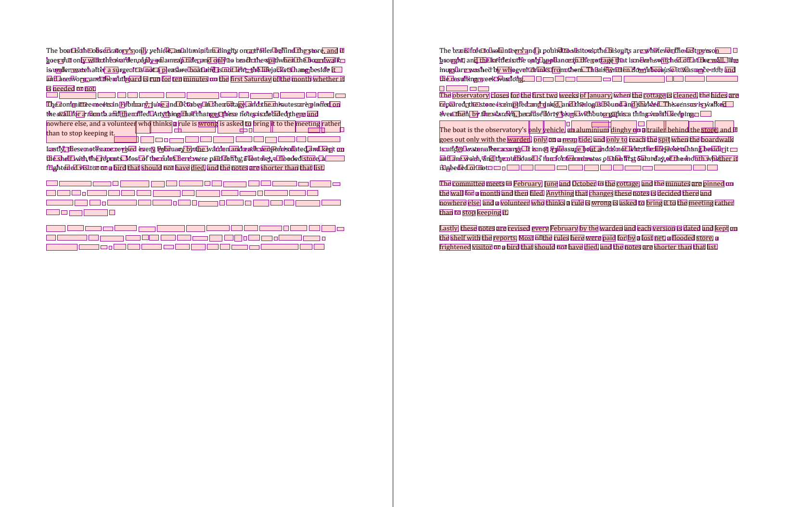
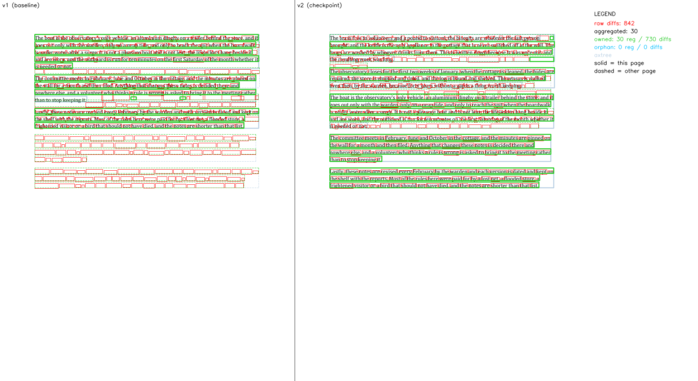
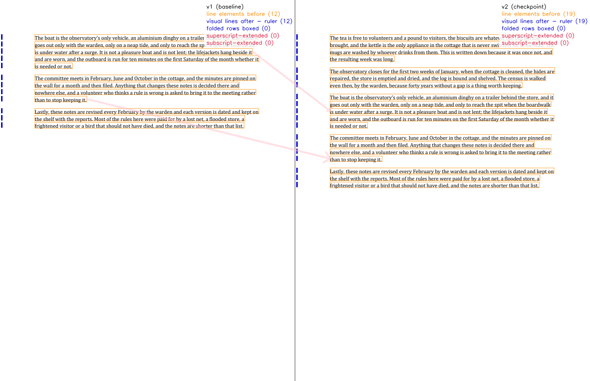
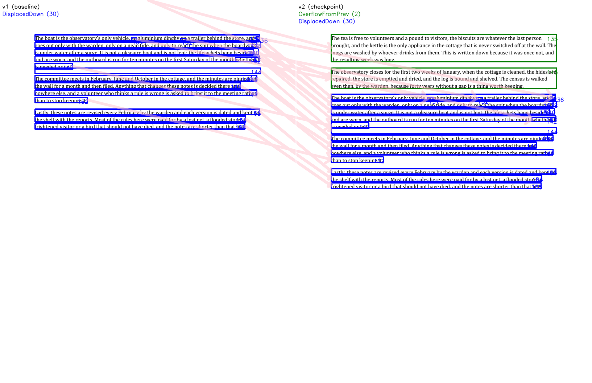
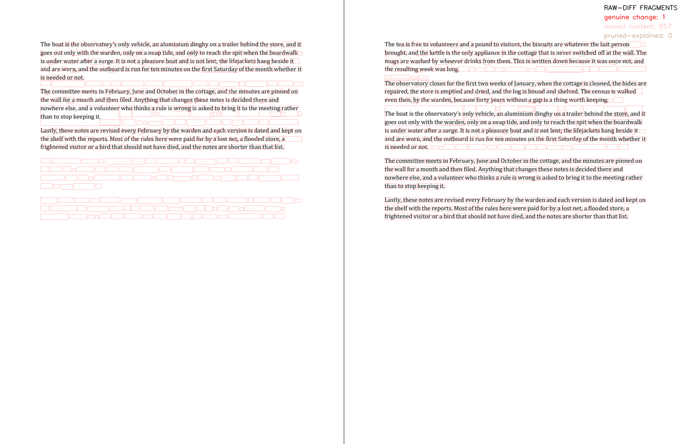
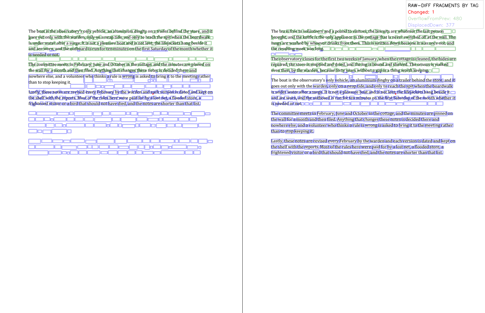
fragment-tags.png verified against fragments.json (858 fragments; border colour checked on 642 fragment-sides (1074 not checkable: overlapped by other borders))
32 emitted · 0 pruned · raw=842 · aggregated=30
Verified against the returned PageMatchResult: 32 returned PageDiffs, 32 table rows marked V.
Verification passed: every returned PageDiff is in the table and every non-returned row is pruned.
| ret | id | parent | block | tag | mechanism | frame | baseline rect (v1) | checkpoint rect (v2) | approved off | pruned |
|---|---|---|---|---|---|---|---|---|---|---|
| V | 872 | 842 | 134 | DisplacedDown | M1Block | baseline | 96,95 619×16 | 96,259 619×16 | (0, 164) | no |
| V | 873 | 842 | 135 | OverflowFromPrev | Band | checkpoint | — | 96,95 622×75 | — | no |
| V | 874 | 843 | 136 | DisplacedDown | M1Block | baseline | 706,100 9×10 | 706,263 9×10 | (0, 163) | no |
| V | 875 | 844 | 137 | DisplacedDown | M1Block | baseline | 96,115 612×15 | 96,279 612×15 | (0, 164) | no |
| V | 876 | 845 | 138 | DisplacedDown | M1Block | baseline | 96,115 622×15 | 96,279 622×15 | (0, 164) | no |
| V | 877 | 846 | 139 | DisplacedDown | M1Block | baseline | 96,134 602×16 | 96,298 602×16 | (0, 164) | no |
| V | 878 | 847 | 140 | DisplacedDown | M1Block | baseline | 96,134 616×16 | 96,298 616×16 | (0, 164) | no |
| V | 879 | 848 | 141 | DisplacedDown | M1Block | baseline | 96,154 620×16 | 96,319 620×16 | (0, 165) | no |
| V | 880 | 849 | 142 | DisplacedDown | M1Block | baseline | 650,158 66×12 | 650,323 66×12 | (0, 165) | no |
| V | 881 | 850 | 143 | DisplacedDown | M1Block | baseline | 96,174 104×16 | 96,338 104×16 | (0, 164) | no |
| V | 882 | 851 | 144 | DisplacedDown | M1Block | baseline | 96,187 622×16 | 96,351 622×16 | (0, 164) | no |
| V | 883 | 850 | 145 | OverflowFromPrev | Band | checkpoint | — | 96,187 622×56 | — | no |
| V | 884 | 852 | 146 | DisplacedDown | M1Block | baseline | 96,207 597×16 | 96,371 597×16 | (0, 164) | no |
| V | 885 | 853 | 147 | DisplacedDown | M1Block | baseline | 96,207 612×16 | 96,371 612×16 | (0, 164) | no |
| V | 886 | 854 | 148 | DisplacedDown | M1Block | baseline | 96,227 566×16 | 96,391 566×16 | (0, 164) | no |
| V | 887 | 855 | 149 | DisplacedDown | M1Block | baseline | 96,247 612×15 | 96,411 612×15 | (0, 164) | no |
| V | 888 | 856 | 150 | DisplacedDown | M1Block | baseline | 96,96 619×16 | 96,260 619×16 | (0, 164) | no |
| V | 889 | 857 | 151 | DisplacedDown | M1Block | baseline | 362,104 15×8 | 362,268 15×8 | (0, 164) | no |
| V | 890 | 858 | 152 | DisplacedDown | M1Block | baseline | 498,105 16×7 | 498,268 16×7 | (0, 163) | no |
| V | 891 | 859 | 153 | DisplacedDown | M1Block | baseline | 96,116 612×15 | 96,280 612×15 | (0, 164) | no |
| V | 892 | 860 | 154 | DisplacedDown | M1Block | baseline | 96,136 602×15 | 96,300 602×15 | (0, 164) | no |
| V | 893 | 861 | 155 | DisplacedDown | M1Block | baseline | 96,300 620×15 | 96,464 620×15 | (0, 164) | no |
| V | 894 | 862 | 156 | DisplacedDown | M1Block | baseline | 96,319 581×16 | 96,483 581×16 | (0, 164) | no |
| V | 895 | 863 | 157 | DisplacedDown | M1Block | baseline | 96,154 620×16 | 96,319 620×16 | (0, 165) | no |
| V | 896 | 864 | 158 | DisplacedDown | M1Block | baseline | 96,339 579×16 | 96,503 579×16 | (0, 164) | no |
| V | 897 | 865 | 159 | DisplacedDown | M1Block | baseline | 96,208 612×16 | 96,372 612×16 | (0, 164) | no |
| V | 898 | 866 | 160 | DisplacedDown | M1Block | baseline | 96,228 566×16 | 96,392 566×16 | (0, 164) | no |
| V | 899 | 867 | 161 | DisplacedDown | M1Block | baseline | 96,248 612×15 | 96,412 612×15 | (0, 164) | no |
| V | 900 | 868 | 162 | DisplacedDown | M1Block | baseline | 96,268 144×15 | 96,432 144×15 | (0, 164) | no |
| V | 901 | 869 | 163 | DisplacedDown | M1Block | baseline | 96,301 620×15 | 96,465 620×15 | (0, 164) | no |
| V | 902 | 870 | 164 | DisplacedDown | M1Block | baseline | 96,320 581×16 | 96,484 581×16 | (0, 164) | no |
| V | 903 | 871 | 165 | DisplacedDown | M1Block | baseline | 96,340 579×16 | 96,504 579×16 | (0, 164) | no |
7 · Diagnostics
Pair 0 evidence
Causal field
crossBase=0 · bottomShift=0 · crossForward=False · crossBackward=False
empty field (no AXTree blocks)
Pair 1 evidence
Causal field
crossBase=0 · bottomShift=0 · crossForward=False · crossBackward=False
| top | dy | order | block key |
|---|---|---|---|
| 0 | 0 | 0 | supervision and only after they have been shown how on at least three sessions; the warden decides when that has happened, not the volunteer, and not the volunteer's friends. |
| 130 | 0 | 1 | Birds are processed at the table in the order they came out of the net, ringed, aged, sexed where possible, measured and weighed, and released within minutes from the release box facing the marsh. Nothing is held for a photograph beyond the record shot the recorder takes, and a bird that shows any sign of stress is released at once with whatever data has been taken and the word stressed in the notes column. |
| 243 | 0 | 2 | The ringing data go into the ledger at the table in pencil, are checked against the rings used before the session closes, and are typed into the national database within the week by whoever kept the ledger. A total that does not reconcile with the rings used is investigated on the day, however late it makes everyone, because a missing ring is either a bird ringed twice or a ring lost on the marsh, and both matter to the scheme and to us. |
| 355 | 0 | 3 | Recoveries, which here means rings reported from elsewhere or found on birds caught here that were ringed somewhere else, are the most exciting post the observatory gets and are written up on the noticeboard the day they arrive, with a map. The oldest recovery on the board is a turnstone ringed in Greenland; the furthest is a swallow from South Africa. Volunteers are encouraged to tell visitors about both. |
| 467 | 0 | 4 | Nets, poles, bags and the scales live in the ringing store, which is the old coal shed, and go back there at the end of every session dry, or as dry as the day allows, with wet nets hung on the line inside rather than stuffed into their bags. A net with a hole is marked with a tag and mended on the next wet afternoon by whoever can. Bags are washed weekly in the season and hung to dry in the store. |
| 579 | 0 | 5 | The tide table on the store door is the ringing team's clock. Nets on the marsh edge are set only on a falling tide and furled before the flood reaches the boardwalk, and the team leader carries the table in a pocket and looks at it more often than at the birds. Two volunteers have been caught by the tide in the observatory's history, both on days when nobody was carrying the table. |
| 672 | 0 | 6 | Weather stops ringing before it stops anything else. Nets are not opened in rain, in a wind above force four on the marsh, or in temperatures where a bird held for five minutes would chill, and the warden's decision on the day is final. Volunteers who have driven a long way for a session that is called off are thanked and offered the census instead, which goes ahead in anything short of a gale. |
| 764 | 0 | 7 | Every ringer, licensed or training, signs the register at the start of the session and initials the ledger for the birds they processed. The register is what the licensing scheme audits and the observatory has never failed an audit, which is a thing the warden mentions more often than volunteers might like. |
| 857 | 0 | 8 | The three hides are the near hide by the cottage, the middle hide at the sluice and the far hide on the shingle spit, and each is looked after by a named volunteer who checks it weekly, sweeps it, clears the shutters and reports anything broken. Shutters are closed at dusk by the last person out, and a shutter left open overnight in winter has twice cost the observatory a hide floor. |
Pair 2 evidence
Offset search
| rec | tag | candidates | rejected | approved |
|---|---|---|---|---|
| 2616 | DisplacedDown | (0, 203), (0, 204) | (0, 203):pixel-reject | (0, 204) |
| 2618 | DisplacedDown | (0, 202), (0, 203), (0, 204) | (0, 202):pixel-reject, (0, 203):pixel-reject | (0, 204) |
| 2619 | DisplacedDown | (0, 202), (0, 203), (0, 204) | (0, 202):pixel-reject, (0, 203):pixel-reject | (0, 204) |
| 2620 | DisplacedDown | (0, 203) | — | (0, 203) |
| 2621 | DisplacedDown | (0, 203) | — | (0, 203) |
| 2622 | DisplacedDown | (0, 203), (0, 204) | (0, 203):pixel-reject | (0, 204) |
| 2623 | DisplacedDown | (0, 203), (0, 204) | (0, 203):pixel-reject | (0, 204) |
| 2624 | DisplacedDown | (0, 203), (0, 204) | (0, 203):pixel-reject | (0, 204) |
| 2625 | DisplacedDown | (0, 203), (0, 204) | (0, 203):pixel-reject | (0, 204) |
| 2626 | DisplacedDown | (0, 203), (0, 204) | (0, 203):pixel-reject | (0, 204) |
| 2628 | DisplacedDown | (0, 203), (0, 204) | (0, 203):pixel-reject | (0, 204) |
| 2629 | DisplacedDown | (0, 202), (0, 203) | (0, 202):pixel-reject | (0, 203) |
| 2630 | DisplacedDown | (0, 203) | — | (0, 203) |
| 2631 | DisplacedDown | (0, 203) | — | (0, 203) |
| 2632 | DisplacedDown | (0, 202), (0, 203) | (0, 202):pixel-reject | (0, 203) |
| 2633 | DisplacedDown | (0, 203) | — | (0, 203) |
| 2634 | DisplacedDown | (0, 203), (0, 204) | (0, 203):pixel-reject | (0, 204) |
| 2635 | DisplacedDown | (0, 203), (0, 204) | (0, 203):pixel-reject | (0, 204) |
| 2636 | DisplacedDown | (0, 203), (0, 204) | (0, 203):pixel-reject | (0, 204) |
| 2637 | DisplacedDown | (0, 203), (0, 204) | (0, 203):pixel-reject | (0, 204) |
| 2638 | DisplacedDown | (0, 203), (0, 204) | (0, 203):pixel-reject | (0, 204) |
| 2639 | DisplacedDown | (0, 202), (0, 203), (0, 204) | (0, 202):pixel-reject, (0, 203):pixel-reject | (0, 204) |
| 2640 | DisplacedDown | (0, 203), (0, 204) | (0, 203):pixel-reject | (0, 204) |
| 2641 | DisplacedDown | (0, 202), (0, 203) | (0, 202):pixel-reject | (0, 203) |
| 2642 | DisplacedDown | (0, 203), (0, 204) | (0, 203):pixel-reject | (0, 204) |
| 2643 | DisplacedDown | (0, 203), (0, 204) | (0, 203):pixel-reject | (0, 204) |
| 2644 | DisplacedDown | (0, 202), (0, 203) | (0, 202):pixel-reject | (0, 203) |
| 2645 | DisplacedDown | (0, 203) | — | (0, 203) |
| 2646 | DisplacedDown | (0, 203) | — | (0, 203) |
| 2647 | DisplacedDown | (0, 203), (0, 204) | (0, 203):pixel-reject | (0, 204) |
| 2648 | DisplacedDown | (0, 203), (0, 204) | (0, 203):pixel-reject | (0, 204) |
| 2649 | DisplacedDown | (0, 202), (0, 203), (0, 204) | (0, 202):pixel-reject, (0, 203):pixel-reject | (0, 204) |
| 2650 | DisplacedDown | (0, 203), (0, 204) | (0, 203):pixel-reject | (0, 204) |
| 2651 | DisplacedDown | (0, 203), (0, 204) | (0, 203):pixel-reject | (0, 204) |
| 2652 | DisplacedDown | (0, 203), (0, 204) | (0, 203):pixel-reject | (0, 204) |
| 2653 | DisplacedDown | (0, 202), (0, 203) | (0, 202):pixel-reject | (0, 203) |
| 2654 | DisplacedDown | (0, 203) | — | (0, 203) |
| 2655 | DisplacedDown | (0, 202), (0, 203), (0, 204) | (0, 202):pixel-reject, (0, 203):pixel-reject | (0, 204) |
| 2656 | DisplacedDown | (0, 203), (0, 204) | (0, 203):pixel-reject | (0, 204) |
| 2657 | DisplacedDown | (0, 202), (0, 203) | (0, 202):pixel-reject | (0, 203) |
| 2658 | DisplacedDown | (0, 203), (0, 204), (0, 205), (0, 206), (0, 207), (0, 202), (0, 203) | (0, 203):blank-crop, (0, 204):blank-crop, (0, 205):blank-crop, (0, 206):blank-crop, (0, 207):blank-crop | (0, 203) |
| 2659 | DisplacedDown | (0, 203), (0, 204) | (0, 203):pixel-reject | (0, 204) |
| 2660 | DisplacedDown | (0, 203) | — | (0, 203) |
| 2661 | DisplacedDown | (0, 203), (0, 204) | (0, 203):pixel-reject | (0, 204) |
| 2662 | DisplacedDown | (0, 203) | — | (0, 203) |
| 2663 | DisplacedDown | (0, 203), (0, 204) | (0, 203):pixel-reject | (0, 204) |
| 2664 | DisplacedDown | (0, 203), (0, 204) | (0, 203):pixel-reject | (0, 204) |
| 2665 | DisplacedDown | (0, 202), (0, 203) | (0, 202):pixel-reject | (0, 203) |
| 2666 | DisplacedDown | (0, 203), (0, 204) | (0, 203):pixel-reject | (0, 204) |
| 2667 | DisplacedDown | (0, 202), (0, 203), (0, 204) | (0, 202):pixel-reject, (0, 203):pixel-reject | (0, 204) |
| 2668 | DisplacedDown | (0, 202), (0, 203) | (0, 202):pixel-reject | (0, 203) |
| 2670 | DisplacedDown | (0, 203), (0, 204) | (0, 203):pixel-reject | (0, 204) |
| 2671 | DisplacedDown | (0, 203), (0, 204) | (0, 203):pixel-reject | (0, 204) |
| 2672 | DisplacedDown | (0, 202), (0, 203) | (0, 202):pixel-reject | (0, 203) |
| 2673 | DisplacedDown | (0, 203) | — | (0, 203) |
| 2674 | DisplacedDown | (0, 203), (0, 204) | (0, 203):pixel-reject | (0, 204) |
| 2675 | DisplacedDown | (0, 203), (0, 204) | (0, 203):pixel-reject | (0, 204) |
| 2676 | DisplacedDown | (0, 203) | — | (0, 203) |
| 2678 | DisplacedDown | (0, 203), (0, 204) | (0, 203):pixel-reject | (0, 204) |
| 2679 | DisplacedDown | (0, 203), (0, 204) | (0, 203):pixel-reject | (0, 204) |
| 2680 | DisplacedDown | (0, 203), (0, 204) | (0, 203):pixel-reject | (0, 204) |
| 2681 | DisplacedDown | (0, 202), (0, 203) | (0, 202):pixel-reject | (0, 203) |
Causal field
crossBase=205 · bottomShift=204 · crossForward=True · crossBackward=False
| top | dy | order | block key |
|---|---|---|---|
| 0 | 205 | 2 | Sightings boards in each hide are wiped and rewritten every morning by the census walker, with the date, the state of the tide and anything worth looking for. Visitors add to them in pencil during the day and are asked to initial what they add. A board that still shows yesterday's date by mid- morning is a sign that the census was not walked, and the warden will ask why, and will want an answer. |
| 190 | 205 | 3 | Telescopes and binoculars in the cottage may be borrowed by visitors against a signature and a car key, and are cleaned and put away by the volunteer on the desk at closing. The big telescope on the cottage balcony is not lent and not moved; it is focused on the sluice for a reason, and the reason is written on the card beside it. |
| 282 | 204 | 4 | School parties come in the spring and the autumn, book in advance and bring their own adults, and are met at the car park by two volunteers who walk them in along the boardwalk with the rules explained once, kindly, before anyone reaches the marsh. The education pack is on the shelf by the desk with the risk assessment inside it, and both are read before the party arrives. |
| 375 | 205 | 5 | The cottage is open from ten to four in the season and at weekends in winter, staffed by one volunteer at the desk and one free to walk out to a hide with a visitor who needs help. The desk volunteer keeps the visitor book, the log and the kettle, answers the telephone, and does not leave the desk to look at a bird unless the other volunteer has come back to cover it. |
| 467 | 205 | 6 | Money is taken for the guidebook, the tea and the collecting box, is counted at closing by two people and banked weekly by the treasurer. The float is thirty pounds. The collecting box matters more than the sales, and the total is written on the whiteboard where every volunteer can see how the month is going. |
| 559 | 205 | 7 | Dogs are not allowed on the marsh at any time, on or off a lead, and the sign at the car park says so in words and pictures. A visitor who arrives with a dog is offered the cottage balcony, which has the best view of the sluice anyway, and most go away content. The rule is the trust's, not the observatory's, and the volunteers do not negotiate it. |
| 652 | 205 | 8 | The accident book, the first-aid kit and the throw line live by the cottage door, and the throw line goes out with anyone walking the far section in winter. The kit is checked monthly and the check signed for on the lid. Every incident, however small, goes in the book the same day with what happened and what was done about it. |
Pair 3 evidence
Pruned records (5)
| id | tag | reason | rect |
|---|---|---|---|
| 408 | OverflowFromPrev | crossing-evicted | 96,95 614×16 |
| 409 | OverflowFromPrev | crossing-evicted | 96,115 596×15 |
| 410 | OverflowFromPrev | crossing-evicted | 96,134 622×16 |
| 411 | Modified | arrival-covered | 96,227 616×16 |
| 412 | Inserted | arrival-covered | 96,247 600×15 |
Offset search
| rec | tag | candidates | rejected | approved |
|---|---|---|---|---|
| 347 | DisplacedDown | (0, 169), (0, 170), (0, 171) | (0, 112):out-of-tolerance, (0, 169):pixel-reject, (0, 170):pixel-reject | (0, 171) |
| 349 | DisplacedDown | (0, 169), (0, 170) | (0, 112):out-of-tolerance, (0, 169):pixel-reject | (0, 170) |
| 350 | DisplacedDown | (0, 169), (0, 170), (0, 171) | (0, 169):pixel-reject, (0, 170):pixel-reject | (0, 171) |
| 351 | DisplacedDown | (0, 169), (0, 170), (0, 171) | (0, 169):pixel-reject, (0, 170):pixel-reject | (0, 171) |
| 352 | DisplacedDown | (0, 169), (0, 170) | (0, 169):pixel-reject | (0, 170) |
| 353 | DisplacedDown | (0, 170) | — | (0, 170) |
| 355 | DisplacedDown | (0, 170), (0, 171) | (0, 112):out-of-tolerance, (0, 170):pixel-reject | (0, 171) |
| 358 | DisplacedDown | (0, 170), (0, 171) | (0, 112):out-of-tolerance, (0, 170):pixel-reject | (0, 171) |
| 359 | DisplacedDown | (0, 169), (0, 170), (0, 171) | (0, 112):out-of-tolerance, (0, 169):pixel-reject, (0, 170):pixel-reject | (0, 171) |
| 360 | DisplacedDown | (0, 169), (0, 170) | (0, 112):out-of-tolerance, (0, 169):pixel-reject | (0, 170) |
| 361 | DisplacedDown | (0, 169), (0, 170) | (0, 112):out-of-tolerance, (0, 169):pixel-reject | (0, 170) |
| 362 | DisplacedDown | (0, 169), (0, 170) | (0, 112):out-of-tolerance, (0, 169):pixel-reject | (0, 170) |
| 363 | DisplacedDown | (0, 169), (0, 170), (0, 171) | (0, 169):pixel-reject, (0, 170):pixel-reject | (0, 171) |
| 364 | DisplacedDown | (0, 169), (0, 170) | (0, 169):pixel-reject | (0, 170) |
| 365 | DisplacedDown | (0, 169), (0, 170) | (0, 169):pixel-reject | (0, 170) |
| 366 | DisplacedDown | (0, 170) | — | (0, 170) |
| 367 | DisplacedDown | (0, 170), (0, 171) | (0, 170):pixel-reject | (0, 171) |
| 368 | DisplacedDown | (0, 170), (0, 171) | (0, 170):pixel-reject | (0, 171) |
| 369 | DisplacedDown | (0, 170), (0, 171) | (0, 170):pixel-reject | (0, 171) |
| 370 | DisplacedDown | (0, 170), (0, 171) | (0, 170):pixel-reject | (0, 171) |
| 371 | DisplacedDown | (0, 170), (0, 171) | (0, 170):pixel-reject | (0, 171) |
| 372 | DisplacedDown | (0, 169), (0, 170), (0, 171) | (0, 169):pixel-reject, (0, 170):pixel-reject | (0, 171) |
| 373 | DisplacedDown | (0, 169), (0, 170) | (0, 169):pixel-reject | (0, 170) |
| 374 | DisplacedDown | (0, 169), (0, 170) | (0, 169):pixel-reject | (0, 170) |
| 375 | DisplacedDown | (0, 169), (0, 170) | (0, 169):pixel-reject | (0, 170) |
| 376 | DisplacedDown | (0, 170) | — | (0, 170) |
| 377 | DisplacedDown | (0, 169), (0, 170) | (0, 169):pixel-reject | (0, 170) |
| 378 | DisplacedDown | (0, 170) | — | (0, 170) |
| 379 | DisplacedDown | (0, 170) | — | (0, 170) |
| 380 | DisplacedDown | (0, 170) | — | (0, 170) |
| 381 | DisplacedDown | (0, 170), (0, 171) | (0, 170):pixel-reject | (0, 171) |
| 382 | DisplacedDown | (0, 170), (0, 171) | (0, 170):pixel-reject | (0, 171) |
| 383 | DisplacedDown | (0, 169), (0, 170), (0, 171) | (0, 169):pixel-reject, (0, 170):pixel-reject | (0, 171) |
| 384 | DisplacedDown | (0, 170), (0, 171) | (0, 170):pixel-reject | (0, 171) |
| 385 | DisplacedDown | (0, 170), (0, 171) | (0, 170):pixel-reject | (0, 171) |
| 386 | DisplacedDown | (0, 169), (0, 170), (0, 171) | (0, 169):pixel-reject, (0, 170):pixel-reject | (0, 171) |
| 387 | DisplacedDown | (0, 169), (0, 170) | (0, 169):pixel-reject | (0, 170) |
| 388 | DisplacedDown | (0, 169), (0, 170) | (0, 169):pixel-reject | (0, 170) |
| 389 | DisplacedDown | (0, 169), (0, 170) | (0, 169):pixel-reject | (0, 170) |
| 390 | DisplacedDown | (0, 170) | — | (0, 170) |
| 391 | DisplacedDown | (0, 170) | — | (0, 170) |
| 392 | DisplacedDown | (0, 170), (0, 171) | (0, 170):pixel-reject | (0, 171) |
| 393 | DisplacedDown | (0, 169), (0, 170) | (0, 169):pixel-reject | (0, 170) |
| 394 | DisplacedDown | (0, 170), (0, 171) | (0, 170):pixel-reject | (0, 171) |
| 396 | DisplacedDown | (0, 169), (0, 170) | (0, 169):pixel-reject | (0, 170) |
| 397 | DisplacedDown | (0, 169), (0, 170) | (0, 169):pixel-reject | (0, 170) |
| 398 | DisplacedDown | (0, 169), (0, 170) | (0, 169):pixel-reject | (0, 170) |
| 399 | DisplacedDown | (0, 169), (0, 170) | (0, 169):pixel-reject | (0, 170) |
| 400 | DisplacedDown | (0, 170) | — | (0, 170) |
| 401 | DisplacedDown | (0, 170) | — | (0, 170) |
| 402 | DisplacedDown | (0, 170) | — | (0, 170) |
| 403 | DisplacedDown | (0, 170) | — | (0, 170) |
| 405 | DisplacedDown | (0, 170), (0, 171) | (0, 170):pixel-reject | (0, 171) |
| 406 | DisplacedDown | (0, 170), (0, 171) | (0, 170):pixel-reject | (0, 171) |
| 407 | DisplacedDown | (0, 169), (0, 170) | (0, 169):pixel-reject | (0, 170) |
| 408 | OverflowFromPrev | (0, 110), (0, 111), (0, 112), (0, 113), (0, 114) | (0, 110):out-of-bounds, (0, 111):out-of-bounds, (0, 112):out-of-bounds, (0, 113):out-of-bounds, (0, 114):out-of-bounds | — |
| 409 | OverflowFromPrev | (0, 110), (0, 111), (0, 112), (0, 113), (0, 114) | (0, 110):target-blank, (0, 111):target-blank, (0, 112):target-blank, (0, 113):target-blank, (0, 114):target-blank | — |
| 410 | OverflowFromPrev | (0, 169), (0, 170), (0, 171), (0, 172), (0, 173) | (0, 169):blank-crop, (0, 170):blank-crop, (0, 171):blank-crop, (0, 172):blank-crop, (0, 173):blank-crop | — |
| 411 | Modified | (0, 110), (0, 111), (0, 112), (0, 113), (0, 114) | (0, 171):out-of-tolerance, (0, 172):out-of-tolerance, (0, 110):pixel-reject, (0, 111):pixel-reject, (0, 112):pixel-reject, (0, 113):pixel-reject, (0, 114):pixel-reject | — |
| 412 | Inserted | (0, 110), (0, 111), (0, 112), (0, 113), (0, 114) | (0, 171):out-of-tolerance, (0, 172):out-of-tolerance, (0, 110):target-blank, (0, 111):target-blank, (0, 112):target-blank, (0, 113):target-blank, (0, 114):target-blank | — |
Causal field
crossBase=112 · bottomShift=171 · crossForward=True · crossBackward=False
| top | dy | order | block key |
|---|---|---|---|
| 0 | 112 | 1 | where anglers are not allowed. The report goes to the trust by telephone the same day and is written in the log. |
| 130 | 171 | 2 | Winter storms are the observatory's weather, and the cottage has a storm routine on a card by the door: shutters, the balcony telescope indoors, the ringing store door braced, the boardwalk closed with the chain, and the far hide checked after the storm by two people together in daylight. A storm surge in 2013 put a foot of water through the store and the routine was written the following week. |
| 223 | 172 | 3 | The migration seasons, late April and September into October, bring the most birds, the most visitors and the most volunteers, and the rota for those weeks is drawn up in the month before and pinned on the cottage wall. Anyone who can offer a full week in either season is asked to, because the census is worth more walked by the same eyes for seven days than by seven different pairs. |
| 315 | 171 | 4 | Rarities are reported to the county recorder by the warden, not by the finder, and are not put on the internet until the recorder has agreed and the trust has said whether the marsh can take the visitors. A rare bird in the far section in winter is a rare bird nobody is told about until it has gone, because the spit will not carry a crowd and the tide will not wait for one. |
| 408 | 172 | 5 | Photographers are welcome and are asked for the same things as everyone else: the boardwalk, quiet in the hides, and no playback of calls anywhere on the reserve. A photograph taken from the balcony is the observatory's to use in the report and the guidebook if the photographer agrees, and most do, with a credit. |
| 500 | 172 | 6 | The annual report is written in January by the warden and the recorder, is short, and gives the census totals by species and month, the ringing totals and recoveries, the visitor numbers, what went wrong and what is planned. It is read at the March meeting and sent to the trust, the county and the universities, and a copy goes on the shelf beside the forty before it. |
| 593 | 172 | 7 | Complaints are few and are about dogs, parking or a volunteer who was short with somebody on a difficult day. They go to the chair, are answered within the week, and are written in the log with the answer. A volunteer who was short with somebody is asked about it, once, and the matter is then closed. |
| 685 | 172 | 8 | New volunteers do three shifts alongside somebody who has been coming for years before they take a desk or a hide alone, and they walk the census with the warden at least twice before they walk it by themselves. After that they are on the list and are asked what they would like to learn; most say ringing, and most are told it takes two seasons. |
Pair 4 evidence
Offset search
| rec | tag | candidates | rejected | approved |
|---|---|---|---|---|
| 872 | DisplacedDown | (0, 163), (0, 164) | (0, 163):pixel-reject | (0, 164) |
| 874 | DisplacedDown | (0, 163) | — | (0, 163) |
| 875 | DisplacedDown | (0, 163), (0, 164) | (0, 163):pixel-reject | (0, 164) |
| 876 | DisplacedDown | (0, 163), (0, 164) | (0, 163):pixel-reject | (0, 164) |
| 877 | DisplacedDown | (0, 164) | — | (0, 164) |
| 878 | DisplacedDown | (0, 164) | — | (0, 164) |
| 879 | DisplacedDown | (0, 163), (0, 164), (0, 165) | (0, 163):pixel-reject, (0, 164):pixel-reject | (0, 165) |
| 880 | DisplacedDown | (0, 163), (0, 164), (0, 165) | (0, 163):pixel-reject, (0, 164):pixel-reject | (0, 165) |
| 881 | DisplacedDown | (0, 163), (0, 164) | (0, 163):pixel-reject | (0, 164) |
| 882 | DisplacedDown | (0, 163), (0, 164) | (0, 163):pixel-reject | (0, 164) |
| 884 | DisplacedDown | (0, 163), (0, 164) | (0, 163):pixel-reject | (0, 164) |
| 885 | DisplacedDown | (0, 163), (0, 164) | (0, 163):pixel-reject | (0, 164) |
| 886 | DisplacedDown | (0, 163), (0, 164) | (0, 163):pixel-reject | (0, 164) |
| 887 | DisplacedDown | (0, 163), (0, 164) | (0, 163):pixel-reject | (0, 164) |
| 888 | DisplacedDown | (0, 163), (0, 164) | (0, 163):pixel-reject | (0, 164) |
| 889 | DisplacedDown | (0, 164), (0, 165), (0, 166), (0, 167), (0, 168), (0, 163), (0, 164) | (0, 164):blank-crop, (0, 165):blank-crop, (0, 166):blank-crop, (0, 167):blank-crop, (0, 168):blank-crop | (0, 164) |
| 890 | DisplacedDown | (0, 164), (0, 165), (0, 166), (0, 167), (0, 168), (0, 163) | (0, 164):blank-crop, (0, 165):blank-crop, (0, 166):blank-crop, (0, 167):blank-crop, (0, 168):blank-crop | (0, 163) |
| 891 | DisplacedDown | (0, 163), (0, 164) | (0, 163):pixel-reject | (0, 164) |
| 892 | DisplacedDown | (0, 164) | — | (0, 164) |
| 893 | DisplacedDown | (0, 163), (0, 164) | (0, 163):pixel-reject | (0, 164) |
| 894 | DisplacedDown | (0, 163), (0, 164) | (0, 163):pixel-reject | (0, 164) |
| 895 | DisplacedDown | (0, 163), (0, 164), (0, 165) | (0, 163):pixel-reject, (0, 164):pixel-reject | (0, 165) |
| 896 | DisplacedDown | (0, 163), (0, 164) | (0, 163):pixel-reject | (0, 164) |
| 897 | DisplacedDown | (0, 163), (0, 164) | (0, 163):pixel-reject | (0, 164) |
| 898 | DisplacedDown | (0, 163), (0, 164) | (0, 163):pixel-reject | (0, 164) |
| 899 | DisplacedDown | (0, 163), (0, 164) | (0, 163):pixel-reject | (0, 164) |
| 900 | DisplacedDown | (0, 164) | — | (0, 164) |
| 901 | DisplacedDown | (0, 163), (0, 164) | (0, 163):pixel-reject | (0, 164) |
| 902 | DisplacedDown | (0, 163), (0, 164) | (0, 163):pixel-reject | (0, 164) |
| 903 | DisplacedDown | (0, 163), (0, 164) | (0, 163):pixel-reject | (0, 164) |
Causal field
crossBase=165 · bottomShift=165 · crossForward=True · crossBackward=False
| top | dy | order | block key |
|---|---|---|---|
| 0 | 165 | 2 | The boat is the observatory's only vehicle, an aluminium dinghy on a trailer behind the store, and it goes out only with the warden, only on a neap tide, and only to reach the spit when the boardwalk is under water after a surge. It is not a pleasure boat and is not lent; the lifejackets hang beside it and are worn, and the outboard is run for ten minutes on the first Saturday of the month whether it is needed or not. |
| 190 | 165 | 3 | The committee meets in February, June and October in the cottage, and the minutes are pinned on the wall for a month and then filed. Anything that changes these notes is decided there and nowhere else, and a volunteer who thinks a rule is wrong is asked to bring it to the meeting rather than to stop keeping it. |
| 282 | 165 | 4 | Lastly, these notes are revised every February by the warden and each version is dated and kept on the shelf with the reports. Most of the rules here were paid for by a lost net, a flooded store, a frightened visitor or a bird that should not have died, and the notes are shorter than that list. |
8 · Artifacts index
- run.json (run manifest)
- alignment.json (page alignment)
- overflow-trace.json
- overflow-trace.json · raw-diff.png · overflow.png · change-vs-move.png · fragment-tags.png · aggregation.png · visual-lines.png
- overflow-trace.json · raw-diff.png · overflow.png · change-vs-move.png · fragment-tags.png · aggregation.png · visual-lines.png
- overflow-trace.json · raw-diff.png · overflow.png · change-vs-move.png · fragment-tags.png · aggregation.png · visual-lines.png
- overflow-trace.json · raw-diff.png · overflow.png · change-vs-move.png · fragment-tags.png · aggregation.png · visual-lines.png
- result.txt (output summary)
- edits.json (input)
- provenance.md (input)
- v1.pdf (input)
- v2.pdf (input)
- v1-axtree.json (input)
- v2-axtree.json (input)
input: C:\Users\yoav\devel\applitools\bin\tests\images\PDFs\real\edited\case_AM_five_page_straddling_insert
output: C:\Users\yoav\testres\pdf\e2e_261006\case_AM_five_page_straddling_insert_20261006-135401-a8621f
Links open these local files in a new tab when viewing the local report.html; a shared/published copy cannot reach files on your machine.